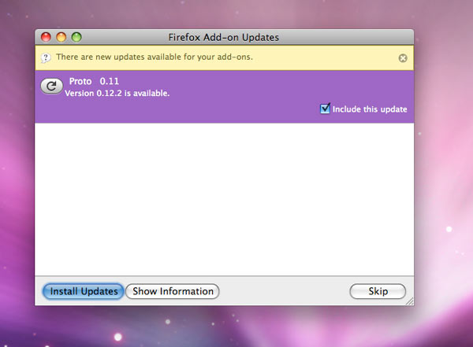
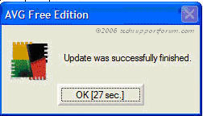
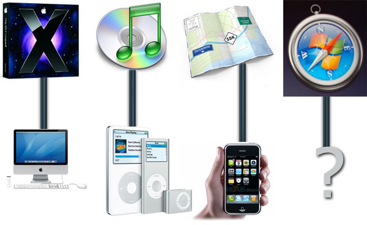

Kristina got me the mouse I have long been eying to replace my 5-year old Microsoft Wireless Explorer Blue mouse: The Logitech MX Revolution. It was an early anniversary gift as our 7 year anniversary is this Friday, March 21st. Logitech claims it is the most advanced mouse in the world and after dragging it around my screen for a minute or two I whole-heartedly agree. It works fine as a regular mouse, but where the real power is in the advanced configuration of the many buttons. Furthermore, you can program the buttons to do different things in different applications providing total flexibility with integration into your workflow. Since Firefox is the main application used on my PC, I decided to turbo charge my mouse shortcuts for speedier web surfing.
The first part was easy. The standard conventions of left-click, right-click, and the scroll wheel would remain in tact. The tried and true middle-click which I rely on to close tabs or open links in new tabs, is no where to be found (more on this later). Instead I have set up the clicking of the main scroll wheel to switch between two different scroll types. The Logitech MX Revolution can be controlled via software to scroll in click-mode or free-wheel mode. Click-mode is just like any other mouse scroll wheel with each turn producing a click. This is used for more precise scrolling. But if you need to get through a long web page in a short amount of time, free-wheel mode will let you spin the scroll with a mighty flick and continue scrolling for up to 7 seconds. Sure makes getting around the largest web page in the universe a lot easier. If you wanted you could define the default scroll-mode in specific applications. I found this difficult to get used to so I set the global behavior to be free-wheel mode with middle clicking switching to click-mode.
Moving on in Firefox, the back and forward buttons naturally would correlate to the back and forward buttons of the browser. This was a no brainier. But the thumb wheel left me puzzled about what task to assign to it. This wasn’t like the main scroll wheel but instead more like a lever that you could push up, down, and in with your right thumb. One interesting combination is to map the copy (Control + C), paste (Control + V), and cut (Control + X) commands to the up, down, and pushed-in positions respectively. In Firefox I find myself switching through tabs a lot so I decided to map Control + Tab (switch to the tab to the right), Control + Shift + Tab (shift to the tab on the left), and Control + W (close tab) functions to the thumb wheel. This set-up works great when tackling the daily news reading I do.
Of course if you have become used to the middle click opening links to new tabs, then you will want to install the free uberOptions which gives you a wide range of additional options for configuring your mouse. I set my one touch search button to perform a middle click. It’s a little out of the way from my index finer, but I can deal with that. The main scroll wheel itself is a bit too heavy to push in multiple times. Besides, Logitech’s configuration software, SetPoint, doesn’t let you assign a click function to this button.
It took a bit of experimenting but I believe I have settled on the ideal set-up for my mouse. This thing is such a joy to use I wish I had taken the leap sooner. If you are in need of a new mouse and you take personal configuration seriously, then the Logitech MX Revolution is a perfect pointing device for you.
What are some handy mouse or keyboard shortcuts that you rely on?
*If you’re more of a keyboard-shortcut kind of person, thanks for reading all the way through. I appreciate it
This guy looked comfy all spread out on the Metro seat. He was asleep when the train rolled in to Glenmont at the end of the Red Line. When I got off at Metro Center, 40 minutes later, he was in a different position but still asleep.
This will be straight to the point. Firefox likes to alert me to new updates to my add-ons and extensions when available. Unfortunately it likes to do this when I start up my browser, stopping everything else it was doing until I click the ‘Continue’ button to proceed.

I like to launch Firefox and my other needed applications while doing something else that needs my attention. The thinking goes that when I return in front of the keyboard all of my tabs from the previous session will be open and ready to go. It’s frustrating to return to a screen staring blankly back at me waiting for me to click a button so it can continue. Once it is done updating it requires me to click a continue button yet again to continue the browser launching process while I stare dumbly back at it waiting to get to my websites.
The fix to this is simple. Since Firefox gives you an option to skip the updates it could have a count down timer of say 30 seconds before it will automatically skip the updates and continue running the browser. A good example of this is the updating mechanism in the anti-virus program AVG Free 7.5.

A minor overlooked detail. Nothing to gripe about, I know. But I just like it when software works with me instead of against me. After all software is capable enough to figure out if it interrupts me and I ignore it’s pleas to work around me and do what i wanted it to do in the first place.
On a related note, the Firefox 3 beta 4 update that was released today is screaming. My 867Mhz PowerBook is a blazingly-fast web surfing machine again!
The special Apple event announcing the iPhone SDK has come and gone. While lots of exciting developments were announced we are still clueless about the purpose of Safari for Windows.
On June 11th, 2007, Steve Jobs announced Safari will have the same features on Vista and XP as on Apple’s flagship OSX operating system. Apple’s official reason for the expansion was to increase the market share of the browser but the blogosphere hinted at something bigger up Steve’s sleeve.
Many thought the browser would become an integral component of developing applications for the iPhone. But as we saw last Thursday, that proved not to be the case. So what is the real point of moving Safari to Windows?
Now that Apple moved to the Intel platform porting applications to Windows requires a whole lot less work. And if Apple has compatible code for the PC platform it would be foolish not to put it out there to test new water with it’s niche web browser. It’s hard to fathom why anyone would choose Safari over Firefox, the massively popular open-source browser that includes a host of user created add-ons. In fact it is those add-ons that keep me tied to the Firefox browser, helping me do my job as a web developer. And most web surfers who aren’t savvy to the other browsers out there will be contempt with the default Internet Explorer. After all, Safari is a pruned down, no frills browser that is a hard sell on features alone. The performance and speed of Safari are certainly ahead of the competition but most people would hardly notice. Perhaps we should look at Apple’s core business as it relates to why they release the software that they do.

Everything that Apple does points back to their core business as a hardware company. Think about it, everything Apple does is to enhance the appeal of it’s hardware. They developed an operating system in order to sell more computers, the iTunes music store has sold billions of songs with only a slim profit in order to lure people to iPods, and the iPhone SDK will allow developers to make whatever applications they can imagine making the phone a more appealing device. If we connect the dots from the past, Safari needs to be a part of some kind of hardware project.
Now how does Safari for Windows fit into this type of plan? It’s not obvious at this time. But maybe come this June the answer will become clear as Apple continues to direct our attention to more shiny new devices with a premium price tag.
Some days are just more awesome than others. Take March 10th, for example, which is the International Day of Awesomeness. Started by Kevin Lawver as an unserious conversation at work, International Day of Awesomeness was created to celebrate any feat of awesomeness. Whether it be programming an awesome website, writing a blog post about someone that epitomizes awesomeness, or just plain being your awesome self, International Day of Awesomeness can mean different things to everyone. For instance, Kevin Lawver plans on wearing a cape.
To top it off, March 10th is the birthday of Chuck Norris, the God of Awesomeness. So whether you consider yourself awesome or not, today is the day to leave your mark on the world. Have a happy International Day of Awesomeness and be sure to join the official group on Facebook!
Took a stroll down by the edge of the Potomac river today after spotting a huge tree floating by in the swift current. A little on the cool side but overall a great day to be outside. Now it is time for me to head back inside for work…